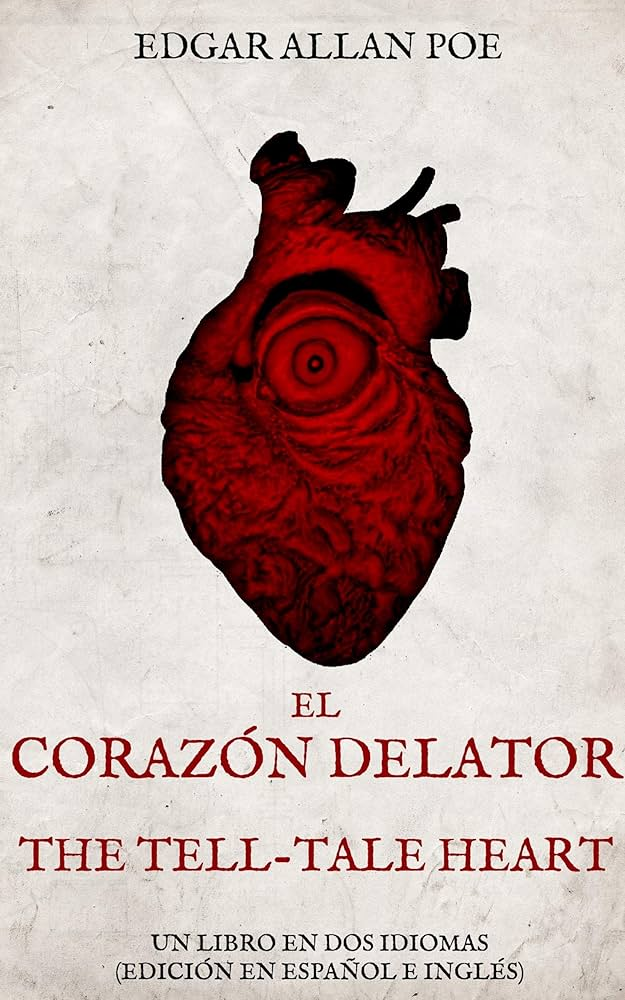

Es reconocido como uno de los maestros universales del relato corto. Entre sus cuentos más famosos, se destacan "El gato negro" y "Manuscrito encontrado en una botella".
Sumerge al lector en la mentalidad de un asesino y cuenta una historia que traspasa las fronteras del tiempo al tratar un tema universal: la culpa